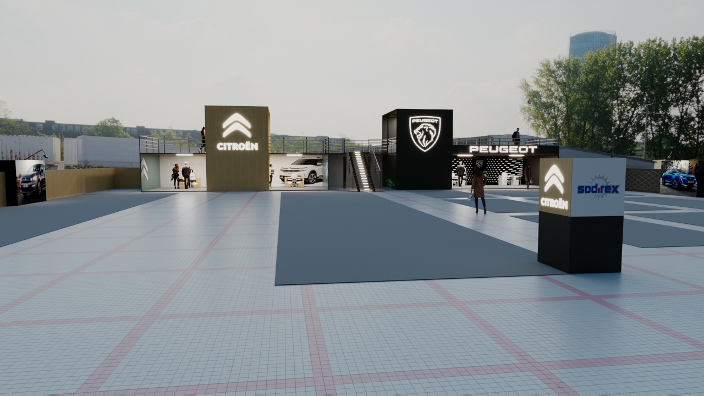
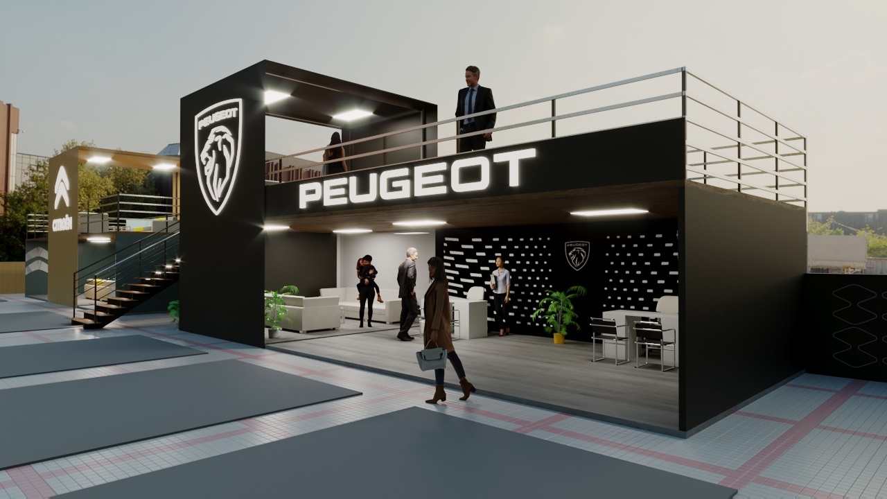
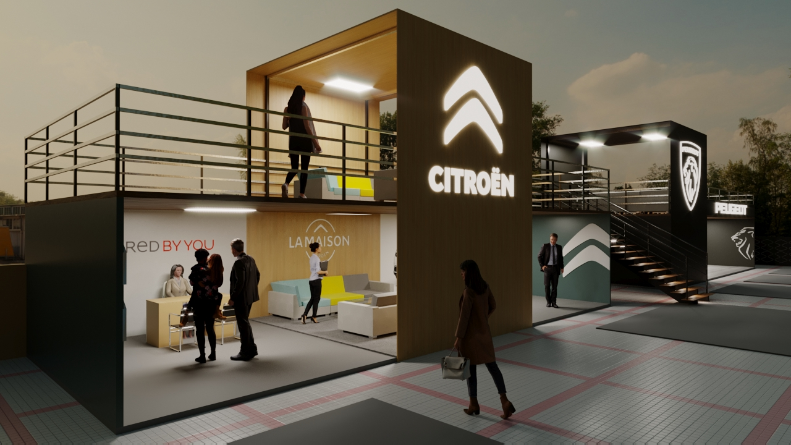
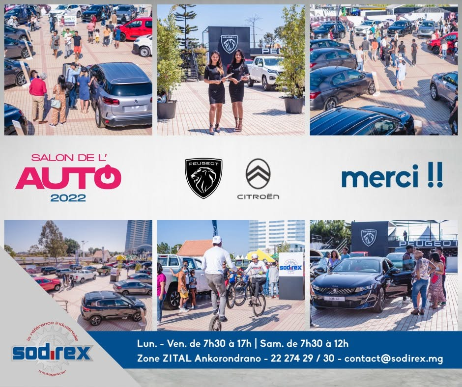
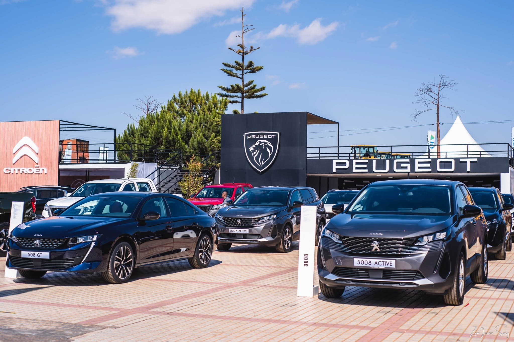
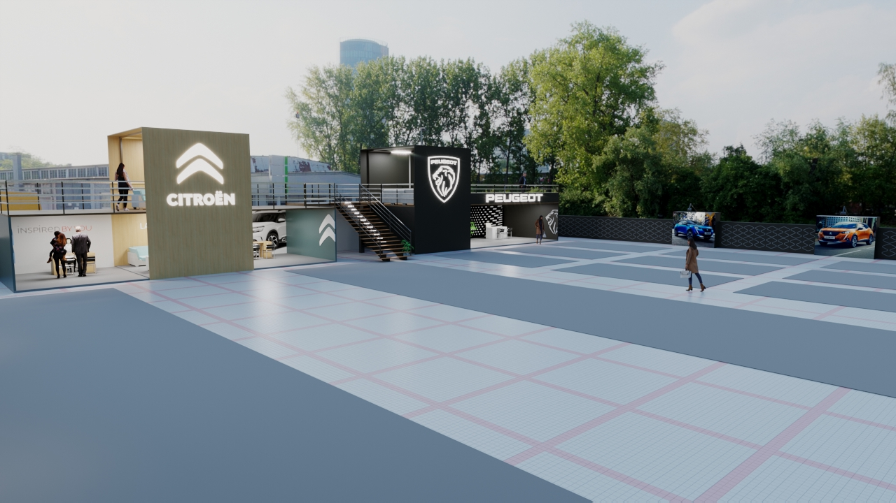

End-to-end design and delivery of a full exhibition stand for Peugeot and Citroën, from concept to build, in 14 days.
3D Design · Brand Identity · Print Production · On-Site Execution — SODIREX, 2022






SODIREX, the official distributor for Peugeot and Citroën in Madagascar, brought me on to lead the design of their stand for the Grand Salon de l'Auto, the country's largest automotive exhibition. The scope covered the full brand experience: spatial design, signage, print production, and illuminated displays, all under a compressed two-week timeline from first concept to opening day.
I began by mapping out the stand in 3D, working through spatial layout, visitor flow, and vehicle placement while respecting the exact dimensions and technical constraints of the show floor. Once the design was locked, I refined the visual identity, shaping the signage, print materials, and illuminated displays that would carry a consistent brand experience from screen to physical space.
With only two weeks between concept and opening day, precision and time management were non-negotiable: every measurement and every deadline had to hold. I stayed hands-on through the full build, managing execution under real pressure to make sure the finished stand matched the design intent down to the last detail.
The stand was completed and opened on schedule, delivering a cohesive brand experience for Peugeot and Citroën, built to exact specifications despite the compressed timeline. It's one of the projects I'm proudest of, not for any single skill but for what it demanded: end-to-end ownership across spatial design, brand identity, print production, and on-site execution, all under significant time pressure.